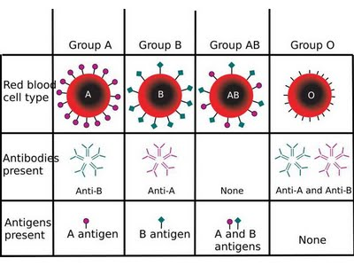

Individu dengan golongan darah A memiliki sel darah merah dengan antigen A di permukaan membran selnya dan menghasilkan antibodi terhadap antigen B dalam serum darahnya. Sehingga, orang dengan golongan darah A-negatif hanya dapat menerima
darah dari orang dengan golongan darah A-negatif atau O-negatif.
Individu dengan golongan darah B memiliki antigen B pada permukaan sel darah merahnya dan menghasilkan antibodi terhadap antigen A dalam serum darahnya. Sehingga, orang dengan golongan darah B-negatif hanya dapat menerima darah dari
orang dengan dolongan darah B-negatif atau O-negatif.
Individu dengan golongan darah AB memiliki sel darah merah dengan antigen A dan B serta tidak menghasilkan antibodi terhadap antigen A maupun B. Sehingga, orang dengan golongan darah AB-positif dapat menerima darah dari orang dengan
golongan darah ABO apapun dan disebut resipien universal. Namun, orang dengan golongan darah AB-positif tidak dapat mendonorkan darah kecuali pada sesama AB-positif.
Individu dengan golongan darah O memiliki sel darah tanpa antigen, tapi memproduksi antibodi terhadap antigen A dan B. Sehingga, orang dengan golongan darah O-negatif dapat mendonorkan darahnya kepada orang dengan golongan darah ABO
apapun dan disebut donor universal. Namun, orang dengan golongan darah O-negatif hanya dapat menerima darah dari sesama O-negatif.

Cara Berkomunikasi dengan Orang bergolongan darah A
Jangan mengangkat topik yang konfrontatif, misalnya, topik kontroversial karena mereka orang yang tidak suka membuat konfrontasi dengan lawan bicara.
Gunakan kata-kata yang relatif sopan karena mereka sangat sensitif dan terkadang konservatif sehingga kata-kata yang tidak sesuai dengan standar kesopanan minimal akan dapat menyinggung mereka.
Jika menjawab usahakan dengan lengkap dan bermakna karena mereka adalah orang yang sangat sempurna dan kurang menyukai hal yang setengah-setengah.
Jangan melebihi mereka saat menyampaikan sesuatu. Maksudnya, jangan sampai mereka merasa dilampaui dalam hal kepintaran dan pengalaman.
Cara Berkomunikasi dengan Orang bergolongan darah B
Mulailah pembicaraan dengan runtun, jangan melompat-lompat karena mereka kurang menyukai hal-hal yang tidak teratur.
Jangan memulai pembicaraan tanpa mengakhirinya.
Gunakan data-data akurat, bukan rekaan
Jika mengajak kerjasama, pastikan bahwa mereka bersedia.
Berbicaralah kepada otaknya bukan hatinya. Gunakan lebih banyak fakta rasional dari sosial.
Gaya Komunikasi dengan Orang bergolongan darah AB
Pertama-tama, ikuti dulu alur pembicaraan mereka.
Selanjutnya, berbicaralah secara tegas karena mereka mudah berubah-ubah.
Bicaralah tentang seni dan metafisika untuk memulai percakapan yang lebih panjang jika hal itu diperlukan.
Jika membuat janji, pastikan mereka memahaminya dan setuju
Jangan ambil keputusan sepihak karena mereka termasuk orang yang suka menentukan sebuah keputusan secara sepihak. Diskusikanlah dengan sinergis.
Gaya Komunikasi dengan Orang bergolongan darah O
Berbicaralah dengan semangat dan penuh vitalitas. Karena mereka kurang menyukai orang-orang yang terkesan lemah, letih, lesu, lemas, letoy, dan loyo yang dianggap tidak dapat mengikuti rentak mereka yang penuh dengan energi.
Jangan gunakan kata-kata negatif dan pesimis karena kelompok kata itu tidak ada dalam kamus mereka yang penuh dengan semangat positif dan optimis.
Berkatalah dengan jujur karena mereka juga demikian adanya. Sekali kebohongan terbongkar, mereka tidak akan pernah percaya lagi pada lain kesempatan.